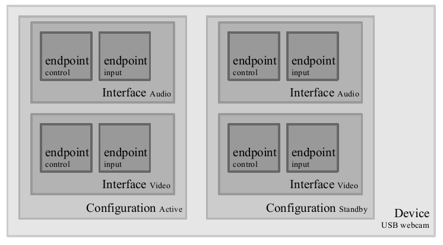

Week 10
Endpoints
The most basic form of USB communication is through an endpoint.
- Unidirectional: carries data in one direction
- from the host to device (OUT endpoint)
- from the device to the host (IN endpoint)
Endpoint information is in struct usb_endpoint_descriptor
- embedded in
struct usb_host_endpoint - Note: defined by the USB standard, so not Linux looking
Some important fields
bEndpointAddress(8-bit)- Use
USB_DIR_OUTandUSB_DIR_INbit masks to determine the direction of data flow
- Use
bmAttributes
- Type of the endpoint
& USB_ENDPOINT_XFERTYPE_MASKto determine if the endpoint is of typeUSB_ENDPOINT_XFER_ISOC,USB_ENDPOINT_XFER_BULK, orUSB_ENDPOINT_XFER_INT
wMaxPacketSize
- Maximum bytes that an endpoint can handle
- Larger transfers will be split into multiple transfers
bInterval
- For INTERRUPT endpoints, this value specifies the milliseconds between interrupt requests for the endpoint
Four endpoint types
- CONTROL
- INTERRUPT
- BULK
- ISOCHRONOUS
CONTROL
Used for configuring the device, retrieving information and status about the device, or sending commands to the device.
Every device has a control endpoint called endpoint 0.
- Used by USB core to configure the device at insertion time
- Transfers are guaranteed with reserved bandwidth
INTERRUPT
Transfer small amounts of data at a fixed rate
For USB keyboards and mice
Also used to control the device
Not for large transfers
Guaranteed reserved bandwidth
BULK
Transfer large amounts of data
no data loss
not time guaranteed
A BULK packet might be split up across multiple transfers
Used for endpoints, storage, and network devices
ISOCHRONOUS
Transfer large amount of data
For real-time data collections, A/V devices
Unlike BULK endpoints, no guarantees (potential data loss)
CONTROL and BULK endpoints are used for asynchronous data transfers
INTERRUPT and ISOCHRONOUS endpoints are periodic with reserved bandwidth
Interfaces
USB endpoints are bundled into interfaces
- A interface handles only one type of logical connection (e.g., a mouse)
- Some devices have multiple interfaces
- e.g., a speaker
- one interface for buttons and one for audio stream
- e.g., a speaker
USB interface may have alternative settings
- e.g., different settings to reserve different amounts of bandwidth for the device
Described via struct usb_interface
- passed from USB core to USB drivers
Some important fields
struct usb_host_interface *altsetting- an array of settings for this interface
unsigned num_altsetting- number of alternative settings
struct usb_host_interface *cut-altsetting
- a pointer into the
altsettingarray, denoting the current setting
int minor
- minor number assigned by the USB core to the interface
- valid after a successful call to
usb_register_dev
Configurations
USB interfaces are bundled into configurations
A USB device can have multiple configurations
- only one can be active at a time
- can switch between them
Described in struct usb_host_config
- embedded in
struct usb_device
USB Webcam device example
